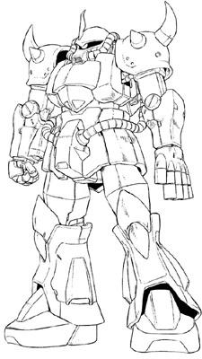

| MS-07B Gouf High-Mobility Ground Combat Interim Zeon Duchy Mobile Suit |
|
|  | |
General and Technical Data |
|
|
Model number: MS-07B Code name: Gouf Unit type: mass-production ground combat mobile suit Operator: Zeon Duchy Dimensions: head height 18.2 meters; overall height 18.5 meters Weight: empty weight 58.5 metric tons; max gross weight 75.4 metric tons Construction: High Tensile Steel Powerplant: Minovsky type ultracompact fusion reactor, output rated at 1034 kw Propulsion: rocket thrusters: 40700 kg total Performance: maximum thruster acceleration 0.54 G, maximum ground running speed 99 km/h Equipment and design features: sensors, range 3600 meters Fixed armaments: heat rod, retractable, variable heat/electrical shock charge, mounted in port in right forearm Optional fixed armaments: 5-barrel 75mm machinegun, barrels mounted as left hand fingers; shield, mounts on left forearm Optional hand armaments: heat sword, battery powered, stored in shield when not in use; 280mm Zaku bazooka, 4 round magazine Magnetic Storage Racks: 5, primary rack on backpack, one secondary rack on either hip. 2 ammunition racks on front hips. |
|
| Technical and Historical Notes | |
|
While the Zimmad engineers frantcially went about development of their new MS-09 Dom mobile suit, Zeonic research staff were also hard at work producing a stopgap mobile suit to supplement the Zeon Duchy's MS-06 Zaku II corps until the Doms were ready for full production. Extensive research put on a testbed MS-06G Zaku eventually gave way to a mobile suit with unsurpassed performance on land, especially in close-combat situations.
The MS-07B Gouf looks, by all means, like a beefed up Zaku II. Larger shoulder pauldrons and a perpetually glaring mono-eye track give it a more menacing appearance than the earlier Zaku designs, but it's much more of a beast than its appearances may bely. The Gouf is equipped with a host of thrusters in its legs and feet, giving it excellent boost and jumpjet capability. It has a faster response time, and its armor has been increased around critical areas. The Gouf's signature weapon is its heat rod. A snakelike jointed-steel whip, the heat rod is electrified by the Gouf's reactor to be used as a superheated bludgeoning weapon, or it can also deliver an electric shock to its targets, sometimes powerful enough to completely shut off enemy units. The heat rod flattens and its stored inside the Gouf's right forearm when not in use. It arms a broadsword-like heat saber in melee combat, and is also furnished with a shield for increased protection against enemy fire. The Gouf's left hand can also be replaced with a five-barreled 75mm machinegun designed to be used at close range. Its hand-like appearance is intended to fool enemy mobile suit pilots into making the mistake that the Gouf is not armed with any ballistics until it is too late. When the 75mm is not used, the Gouf can equip normal Zaku weaponry.
Though the Gouf is technically slated for replacement by the new Dom mobile suits, some pilots have rather gotten to enjoy the Gouf's high reaction time and preference for close combat. Its large shoulder spikes are also seen as a sign of leadership from other pilots.
|
 RPG quick stats sheet
RPG quick stats sheet | Weapons and Features | |
|
Gouf Cockpit |
|